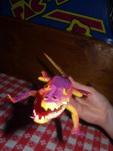
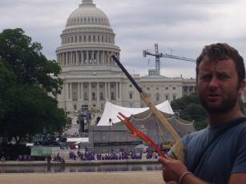

The more observant of you may have noticed the odd crocodile amongst our photographs. Read more about this crazy croc and see below for details of how you can enter a competition to name him!
| Our first introduction to the crocodile came in a well-deserved cocktail, or Croc-tail. We had spent the entire day on a walking tour of New York and must have shed a fair bit of our rubber soles on the unforgiving tarmac of the Big Apple's streets. Our cocktail arrived with this plastic crocodile having the main part of the lethal tasty essence in his belly. You can just make out his tail sticking out amongst the straws. | |
|  | Slightly giddy from a day of extreme foot-pounding exercise followed by a large cocktail in a goldfish bowl we came up with the idea of stealing the crocodile and taking him around the world! |
| Making our escape at Grand Central Station, Helen is already feeling the peckish-ness brought on by the adrenalin inducing studenty-type theft from the downtown bar and attempts to eat the trophy! | |
| A rare 'behind the scenes' glimpse of the crocodile doing his screen debut. Notice how our first attempts resulted in blurry footage of the star, you can also see our sound boom in the picture below his head. In future photographs we correctly placed the boom above his head and out of the shot. | |
| Take 2. Now the damn (sorry America) building's out of focus! | |
|  | Camera 2 is showing an audience view of the shot being set up. You can see the frustration of setting up taking it's toll on Sam's composure, 'all I want is a cup of tea and some chips, damn, wrong country'. |
| Helen takes over. She is clearly a woman with no technical ability, the crocodile is dead. | |
| In an attempt to save our relationship, the crocodile comes to life and attempts to eat one of us, I realise I may have to complete the trip alone... | |
| At last, one year later, a professional image. The Capitol building has had a facelift, the cranes are out of the way, and the sun has finally come out. |
And now...you may surprised to learn that the crocodile has no name! He spent one full year with us taking up valuable space in our backpacks and doesn't have a tag! Well, now you can change all that, visit this link for your change to suggest a name.